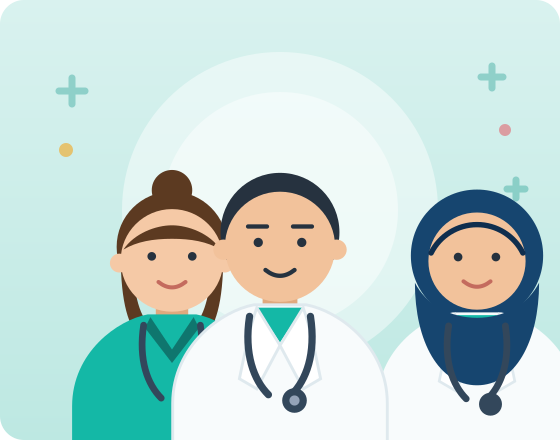

Misyonumuz
Bölgemizde yaşayan her bireye; erişilebilir, kaliteli ve güler yüzlü birinci basamak sağlık hizmeti sunmak, koruyucu sağlık hizmetleriyle toplum sağlığını güçlendirmek.
Merkezimizi yakından tanıyın: tarihçemiz, misyonumuz, vizyonumuz, hizmet standartlarımız ve hasta haklarımız.

Yenişehir Aile Sağlığı Merkezi, 2010 yılından bu yana Ankara İl Sağlık Müdürlüğü'ne bağlı olarak Yenişehir ve çevre mahallelerde yaşayan vatandaşlarımıza birinci basamak sağlık hizmeti sunmaktadır.
6 aile hekimi ve deneyimli sağlık ekibimizle; koruyucu sağlık hizmetlerini önceleyen, hastaya saygılı ve ulaşılabilir bir hizmet anlayışını benimsiyoruz. Amacımız yalnızca hastalıkları tedavi etmek değil, siz hasta olmadan önce sağlığınızı korumaktır.
Bölgemizde yaşayan her bireye; erişilebilir, kaliteli ve güler yüzlü birinci basamak sağlık hizmeti sunmak, koruyucu sağlık hizmetleriyle toplum sağlığını güçlendirmek.
Hasta memnuniyetinde bölgemizin referans aile sağlığı merkezi olmak; sağlıklı nesillerin yetişmesine öncülük eden, güvenilir ve yenilikçi bir kurum olmak.
Hasta mahremiyetine saygı, kanıta dayalı tıp uygulaması, eşit ve adil hizmet, sürekli eğitim ve gelişim, şeffaf iletişim.
Merkezimizde yapılan başlıca işlemler için öngörülen ortalama hizmet süreleri:
Aşağıdaki gruplardaki hastalarımıza muayene ve işlemlerde öncelik tanınmaktadır:
Merkezimizden hizmet alan her hasta aşağıdaki haklara sahiptir: